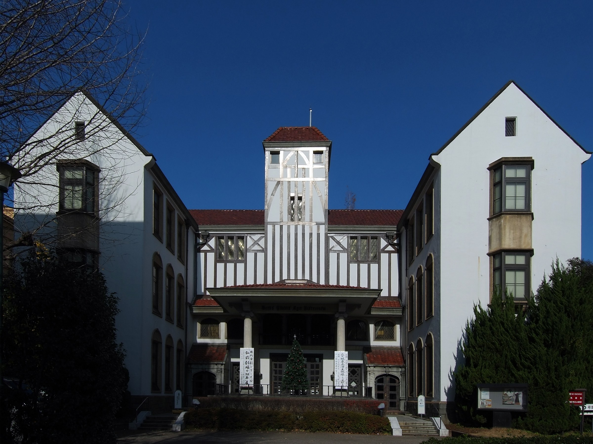

Jonathan Zwicker, “Curio Fever: Tsubouchi Shōyō and the Origins of the Waseda Theater Museum”

Jonathan Zwicker is Assistant Professor of Japanese Literature in the Department of Asian Languages and Cultures, University of Michigan. He received his PhD in Japanese literature from Columbia University in 2002 and was a fellow in the Michigan Society of Fellows from 2002-2005.
Asian Languages and Cultures
3075 Frieze Building
University of Michigan
Ann Arbor, MI 48109
Jonathan Zwicker
Saturday, September 28, 2013
Jonathan Zwicker, “Curio Fever: Tsubouchi Shōyō and the Origins of the Waseda Theater Museum”
The Tsubouchi Memorial Theater Museum at Waseda University was opened in 1928 though the idea for the Museum goes back over a decade earlier. The Museum was Tsubouchi ShÅyÅ’s own idea, born out of a desire both to preserve and archive Japan’s theatrical past and to situate that past in a comparative framework. The early collections of the museum as well as its mission as a locus of comparative research emerge out of a moment in ShÅyÅ’s career when he was avidly collecting all manner of early modern theater material but also when the meaning of this material as a record of the past began to change in the wake of the Great Kanto Earthquake of 1923. This paper examines the early history of the Waseda Theater Museum in the context of ShÅyÅ’s own practices as a collector of theater ephemera and of his ambivalence over what he saw as the dilettantism of western collectors of Japanese art, what he once referred to as “curio fever.”